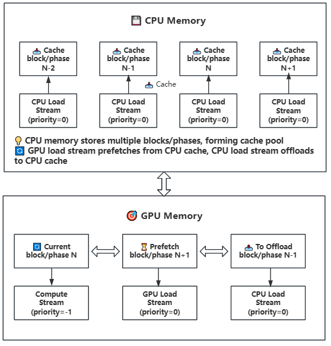
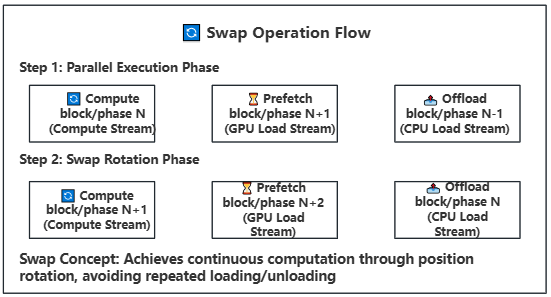
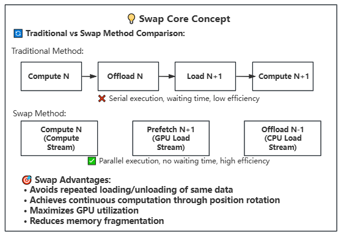
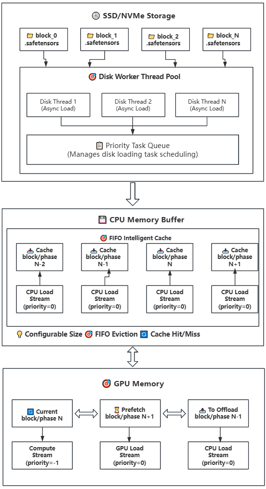
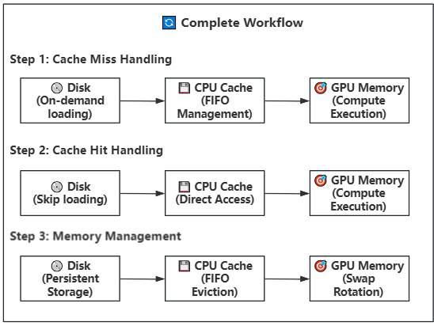

Parameter Offload#
📖 Overview#
LightX2V implements an advanced parameter offload mechanism specifically designed for large model inference under limited hardware resources. The system provides an excellent speed-memory balance by intelligently managing model weights across different memory hierarchies.
Core Features:
Block/Phase-level Offload: Efficiently manages model weights in block/phase units for optimal memory usage
Block: The basic computational unit of Transformer models, containing complete Transformer layers (self-attention, cross-attention, feedforward networks, etc.), serving as a larger memory management unit
Phase: Finer-grained computational stages within blocks, containing individual computational components (such as self-attention, cross-attention, feedforward networks, etc.), providing more precise memory control
Multi-tier Storage Support: GPU → CPU → Disk hierarchy with intelligent caching
Asynchronous Operations: Overlaps computation and data transfer using CUDA streams
Disk/NVMe Serialization: Supports secondary storage when memory is insufficient
🎯 Offload Strategies#
Strategy 1: GPU-CPU Block/Phase Offload#
Use Case: Insufficient GPU memory but sufficient system memory
How It Works: Manages model weights in block or phase units between GPU and CPU memory, utilizing CUDA streams to overlap computation and data transfer. Blocks contain complete Transformer layers, while Phases are individual computational components within blocks.



Block vs Phase Explanation:
Block Granularity: Larger memory management unit containing complete Transformer layers (self-attention, cross-attention, feedforward networks, etc.), suitable for sufficient memory scenarios with reduced management overhead
Phase Granularity: Finer-grained memory management containing individual computational components (such as self-attention, cross-attention, feedforward networks, etc.), suitable for memory-constrained scenarios with more flexible memory control
Key Features:
Asynchronous Transfer: Uses three CUDA streams with different priorities for parallel computation and transfer
Compute stream (priority=-1): High priority, handles current computation
GPU load stream (priority=0): Medium priority, handles CPU to GPU prefetching
CPU load stream (priority=0): Medium priority, handles GPU to CPU offloading
Prefetch Mechanism: Preloads the next block/phase to GPU in advance
Intelligent Caching: Maintains weight cache in CPU memory
Stream Synchronization: Ensures correctness of data transfer and computation
Swap Operation: Rotates block/phase positions after computation for continuous execution
Strategy 2: Disk-CPU-GPU Block/Phase Offload (Lazy Loading)#
Use Case: Both GPU memory and system memory are insufficient
How It Works: Builds upon Strategy 1 by introducing disk storage, implementing a three-tier storage hierarchy (Disk → CPU → GPU). CPU continues to serve as a cache pool with configurable size, suitable for devices with limited CPU memory.


Key Features:
Lazy Loading: Model weights are loaded from disk on-demand, avoiding loading the entire model at once
Intelligent Caching: CPU memory buffer uses FIFO strategy with configurable size
Multi-threaded Prefetch: Uses multiple disk worker threads for parallel loading
Asynchronous Transfer: Uses CUDA streams to overlap computation and data transfer
Swap Rotation: Achieves continuous computation through position rotation, avoiding repeated loading/offloading
Working Steps:
Disk Storage: Model weights are stored on SSD/NVMe by block, one .safetensors file per block
Task Scheduling: When a block/phase is needed, priority task queue assigns disk worker threads
Asynchronous Loading: Multiple disk threads load weight files from disk to CPU memory buffer in parallel
Intelligent Caching: CPU memory buffer manages cache using FIFO strategy with configurable size
Cache Hit: If weights are already in cache, transfer directly to GPU without disk read
Prefetch Transfer: Weights in cache are asynchronously transferred to GPU memory (using GPU load stream)
Compute Execution: Weights on GPU perform computation (using compute stream) while background continues prefetching next block/phase
Swap Rotation: After computation completes, rotate block/phase positions for continuous computation
Memory Management: When CPU cache is full, automatically evict the least recently used weight block/phase
⚙️ Configuration Parameters#
GPU-CPU Offload Configuration#
config = {
"cpu_offload": True,
"offload_ratio": 1.0, # Offload ratio (0.0-1.0)
"offload_granularity": "block", # Offload granularity: "block" or "phase"
"lazy_load": False, # Disable lazy loading
}Disk-CPU-GPU Offload Configuration#
config = {
"cpu_offload": True,
"lazy_load": True, # Enable lazy loading
"offload_ratio": 1.0, # Offload ratio
"offload_granularity": "phase", # Recommended to use phase granularity
"num_disk_workers": 2, # Number of disk worker threads
"offload_to_disk": True, # Enable disk offload
}Intelligent Cache Key Parameters:
max_memory: Controls CPU cache size, affects cache hit rate and memory usagenum_disk_workers: Controls number of disk loading threads, affects prefetch speedoffload_granularity: Controls cache granularity (block or phase), affects cache efficiency"block": Cache management in complete Transformer layer units"phase": Cache management in individual computational component units
Offload Configuration for Non-DIT Model Components (T5, CLIP, VAE):
The offload behavior of these components follows these rules:
Default Behavior: If not specified separately, T5, CLIP, VAE will follow the
cpu_offloadsettingIndependent Configuration: Can set offload strategy separately for each component for fine-grained control
Configuration Example:
{
"cpu_offload": true, // DIT model offload switch
"t5_cpu_offload": false, // T5 encoder independent setting
"clip_cpu_offload": false, // CLIP encoder independent setting
"vae_cpu_offload": false // VAE encoder independent setting
}For memory-constrained devices, a progressive offload strategy is recommended:
Step 1: Only enable
cpu_offload, disablet5_cpu_offload,clip_cpu_offload,vae_cpu_offloadStep 2: If memory is still insufficient, gradually enable CPU offload for T5, CLIP, VAE
Step 3: If memory is still not enough, consider using quantization + CPU offload or enable
lazy_load
Practical Experience:
RTX 4090 24GB + 14B Model: Usually only need to enable
cpu_offload, manually set other component offload tofalse, and use FP8 quantized versionSmaller Memory GPUs: Need to combine quantization, CPU offload, and lazy loading
Quantization Schemes: Refer to Quantization Documentation to select appropriate quantization strategy
Configuration File Reference:
Wan2.1 Series Models: Refer to offload config files
Wan2.2 Series Models: Refer to wan22 config files with
4090suffix
🎯 Usage Recommendations#
🔄 GPU-CPU Block/Phase Offload: Suitable for insufficient GPU memory (RTX 3090/4090 24G) but sufficient system memory (>64/128G)
💾 Disk-CPU-GPU Block/Phase Offload: Suitable for both insufficient GPU memory (RTX 3060/4090 8G) and system memory (16/32G)
🚫 No Offload: Suitable for high-end hardware configurations pursuing best performance
🔍 Troubleshooting#
Common Issues and Solutions#
Disk I/O Bottleneck
Solution: Use NVMe SSD, increase num_disk_workers
Memory Buffer Overflow
Solution: Increase max_memory or reduce num_disk_workers
Loading Timeout
Solution: Check disk performance, optimize file system
Note: This offload mechanism is specifically designed for LightX2V, fully utilizing the asynchronous computing capabilities of modern hardware, significantly lowering the hardware threshold for large model inference.